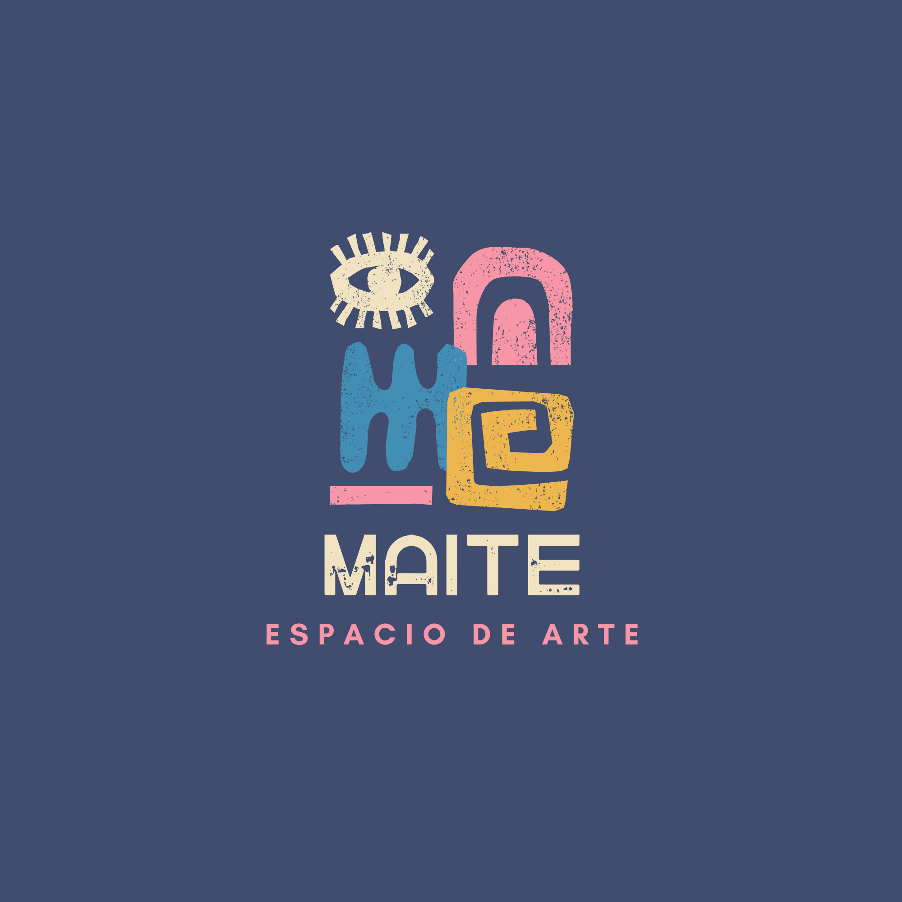

Sobre mí

Soy estudiante de preparatoria y estoy interesada en la carrera de arte digital, por eso he creado este logo, Quiero aprender a crear todo tipo de contenido visual en la computadora, desde que nace la idea hasta que el video o la imagen queda lista. Mi meta es usar programas modernos para hacer figuras en 3D y animaciones que emocionen a la gente, trabajando de una forma rápida, ordenada y profesional.
Jerarquía familiar
- Padre: Ruben Garatachea Benhumea
- Madre: Alicia Orozco Mejia
- Hermana mayor: Alondra Garatachea Orozco
- Hermana mediana: Monserrath Garatachea Orozco
- Mascota (gato): Camila
Carreras de Interés (Mis metas)
- Licenciatura en Arte Digital
- Diseño y Comunicación Visual
- Animación y Efectos Especiales
- Producción de Videojuegos
- Marketing Digital y Moda
Cosas que amo
- Maquillaje artístico y tendencias
- Moda y diseño de ropa
- Salir con mis amigos
- Pasar tiempo con mi familia
- Ver series de drama y suspenso
Menú Semanal de Comida
| Lunes | Martes | Miércoles | Jueves | Viernes | Sábado | Domingo |
|---|---|---|---|---|---|---|
| Pasta Alfredo | Pollo con ensalada | Bowl de quinoa | Tacos saludables | Ensalada César | Pizza casera | Pasta al pesto |